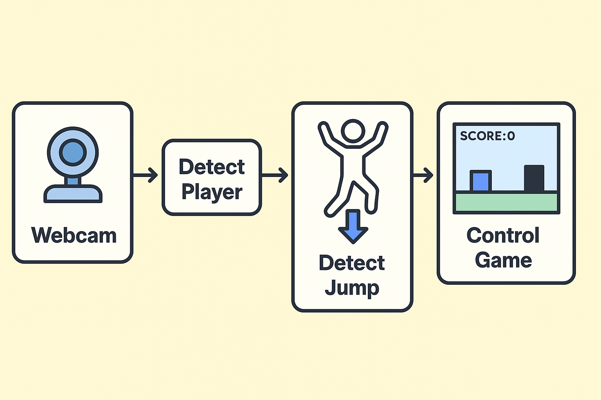

An obstacle-jumping game where you control the character with your body. Using a webcam and some pose detection, the game reacts when you physically jump. It’s a fun project that combines creative coding, computer vision, and game design.
How It Works
The way this works is by taking the webcam input and sending each frame to a pose detection algorithm. Once the algorithm detects where a person is, it’s easy to determine if that person is jumping or not. If we have a jump, we can notify the game so that it handles its logic (drawing the images, collision detection, sound, score, etc.).
Commercial Applications
The technology behind it has real potential for commercial use, especially in marketing, events, education, and retail experiences. Imagine walking into a mall, a trade show, or a store and being invited to jump to win a prize or control a game with your body—no controllers, no downloads, just you and a screen. Here's how a game like this could be used commercially:
- A branded version of the game with product, mascot, or campaign themes.
- Example: For a sports drink, players jump over fire pits and collect bottles for points.
- Shoppers can play for discounts or samples.
- Fun, attention-grabbing, and shareable on social media.
- Kids learn about nutrition, recycling, or safety through play.
- Ideal for schools, museums, and family events.
- Interactive booths to attract foot traffic at expos.
- Participants can win branded merchandise or enter raffles.
- Touchless interaction is ideal post-pandemic.
- It's inclusive and intuitive—if you can jump, you can play.
- Memorable experiences improve brand recall.
The cool thing about this game is that it can be customized with different graphics, sounds, and gameplay elements to fit any brand or campaign theme.